|
Fortuna Sittard - Roda JC (0-0) 5 mei 2002 |
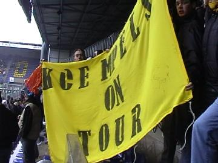
In deze historische wedstrijd waarin mogelijk Roda en
Fortuna elkaar voor het laatst zullen ontmoeten in de
eredivisie werd de "koempels on tour" vaan getoond.
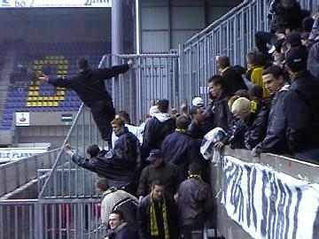
Een beetje provoceren.
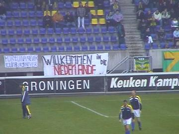
Dankeschön!
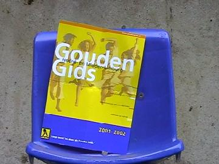
Om alvast te wennen aan de Gouden Gids competitie.
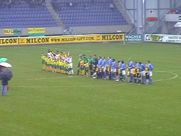
Zowel Roda als Fortuna speelde in het uit-tenue.
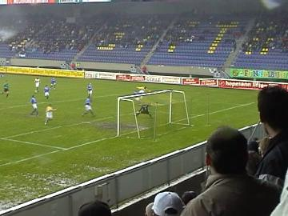
Schitterende redding van Hesp.
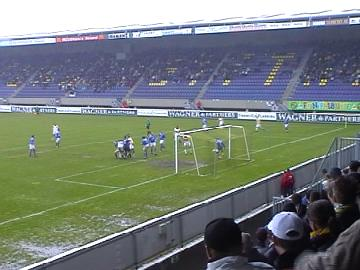
Hier wordt een bal van de lijn gehaald.
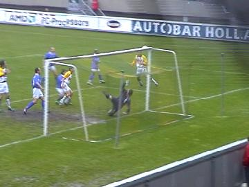
En alweer behoedt Hesp Fortuna voor een Rodagoal.
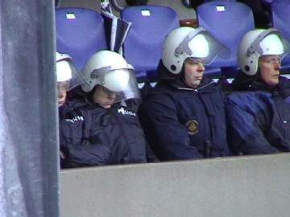
Het is een saaie wedstrijd op een zompig veld. Zelfs de
ME sukkelt daarvan in slaap.
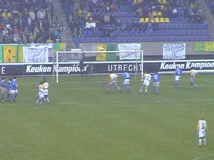
Vrijetrap van Luijpers raakt de lat.
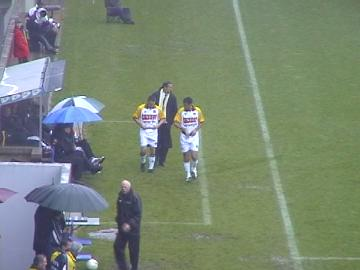
Leekens brengt een dubbele wissel: De naar De Graafschap
verkassende Zafarin en de na een blessure teruggekomen
Anastasiou.
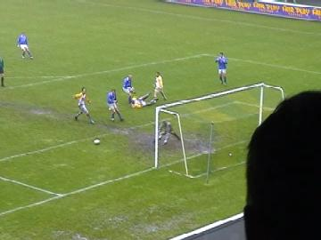
Kansje voor Fortuna, maar twee aanvallers stappen
over de bal.
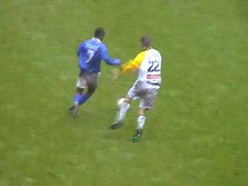
Luijpers in duel.
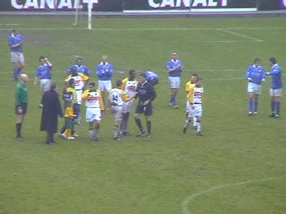
Circa 8 min. voor tijd krijgt Hesp die afscheid neemt
van zijn mooie keeperscarrière een publiekswissel.
Zowel het Fortuna- als Rodapubliek bejubelt de speler.
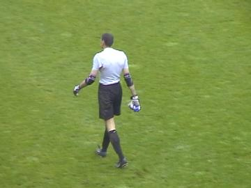
De laatste opname van Kalac......
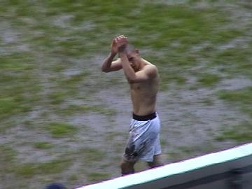
Soetaers heeft zojuist zijn shirt in het publiek gegooid.
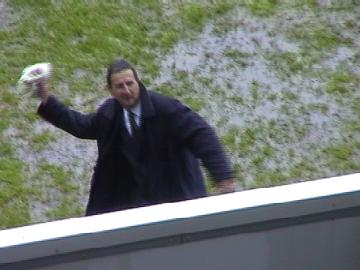
Leekens gooit zijn sjaal naar de supporters.
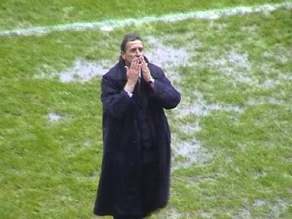
En werp ons een kushandje toe.
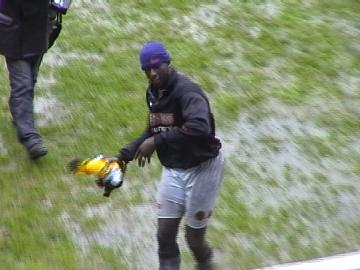
Vrede gooit ook zijn shirt naar het publiek.
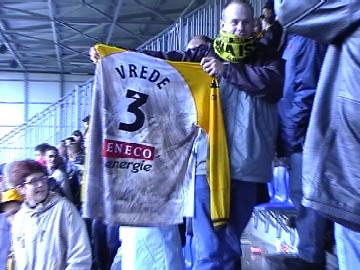
Het komt in bezit van de trotse BAM.
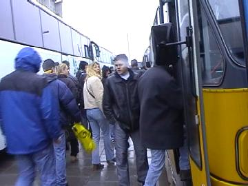
Iedereen gaat weer aan boord van de zwaar geëscorteerde
veertien bussen. Er gold vandaag een verplichte buscombi!
©KPD